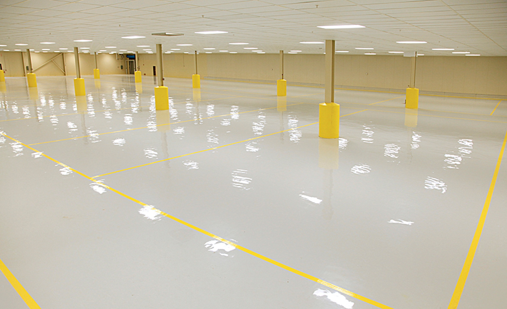

SaniCoat
High-Performance Epoxy Coating Systems

SaniCoat Epoxy Coating Systems
High-Performance Epoxy Coating Systems
The SaniCoat line includes two high-performance 100% solids epoxy coating systems designed for demanding industrial and commercial environments. Both are zero VOC, self-leveling, and USDA acceptable with excellent chemical resistance.
SaniCoat 150P — Versatile Primer, Base Coat & Top Coat
SaniCoat 150P is a two-component 100% solids pigmented resin system designed for a variety of applications including dust proofing, priming, base coating, and top coating. It uses a cycloaliphatic curing agent for better color stability with good flexibility and excellent physical and chemical resistant properties.
SaniCoat 200 — Performance Novolac Topcoat
SaniCoat 200 is a two-component 100% solids modified Novolac formulated as a performance topcoat to support moderate industrial traffic and chemical exposure. It self-levels to a high gloss, sanitary, durable, and easy to clean surface. Anti-microbial protection available.
Shared Benefits
- 100% solids, zero VOCs
- Self-leveling
- Excellent chemical resistance
- Tenacious bond to most substrates
- USDA acceptable
- Good color stability
- Variable non-slip textures available
- Fast cure, minimal downtime
Typical Applications
- Traffic and manufacturing areas
- Quartz floor systems and topcoats
- Warehouses and storage areas
- Pharmaceutical plants
- Showrooms
- Clean rooms and laboratories
- Maintenance garages and workshops
- Line striping and safety markings
- Dust proofing to heavy duty resurfacing
| Specification | SaniCoat 150P | SaniCoat 200 |
|---|---|---|
| Compressive Strength | 11,000 psi | 12,000 psi |
| Tensile Strength | 6,600 psi | 7,000 psi |
| Flexural Strength | 7,800 psi | 9,600 psi |
| Abrasion Resistance | 0.10 gm loss | 0.07 gm loss |
| Foot Traffic | 12 hours | 10 hours |
| Forklift Traffic | 16 hours | 14 hours |
| Shore D Hardness | 80 | 87 |
| Heat Distortion | 128°F | 135°F |
| Bond to Concrete | 100% concrete failure | 100% concrete failure |
Colors: Light gray, medium gray, dark gray, beige, taupe, safety yellow, green, safety red, tile red, blue, white, black.
Need Epoxy Coatings or Line Striping?
From protective topcoats to safety markings, SaniCoat delivers lasting durability in any environment. Contact us for a free consultation.
Contact Us →